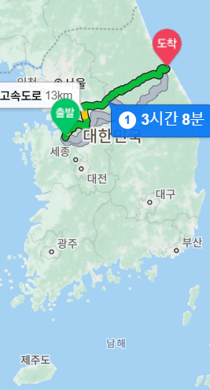
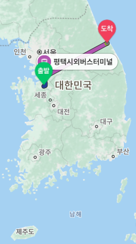
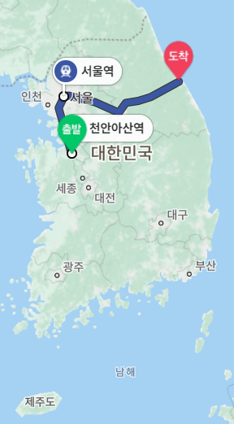
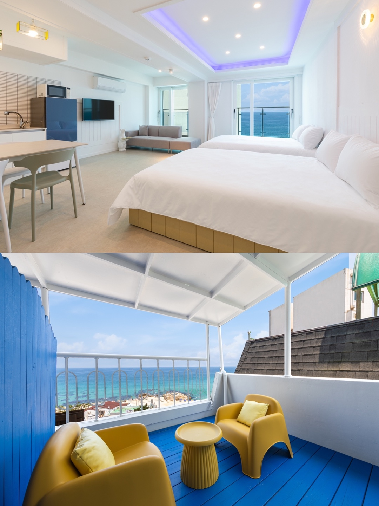
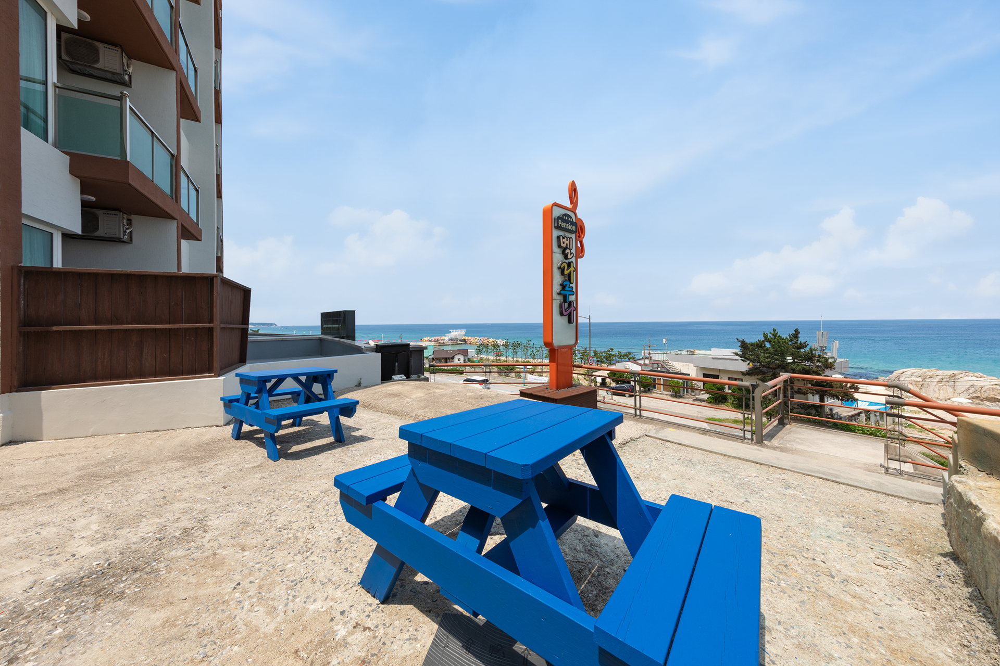
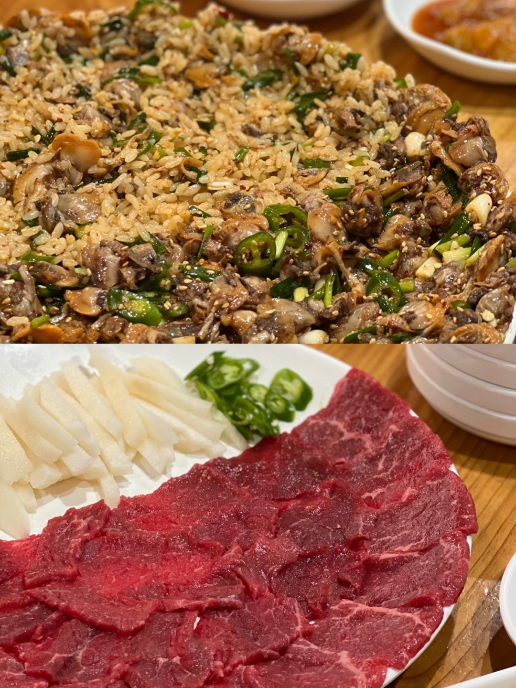
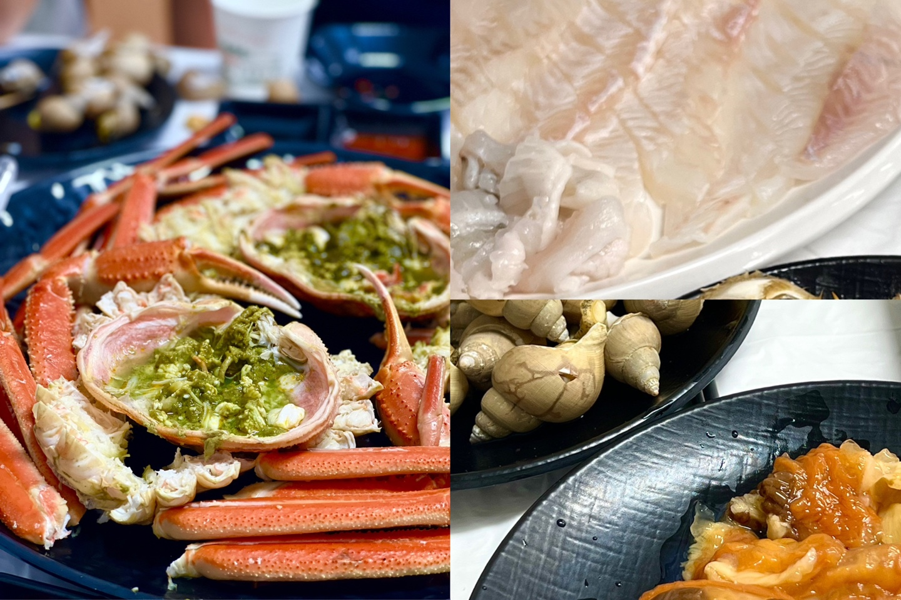
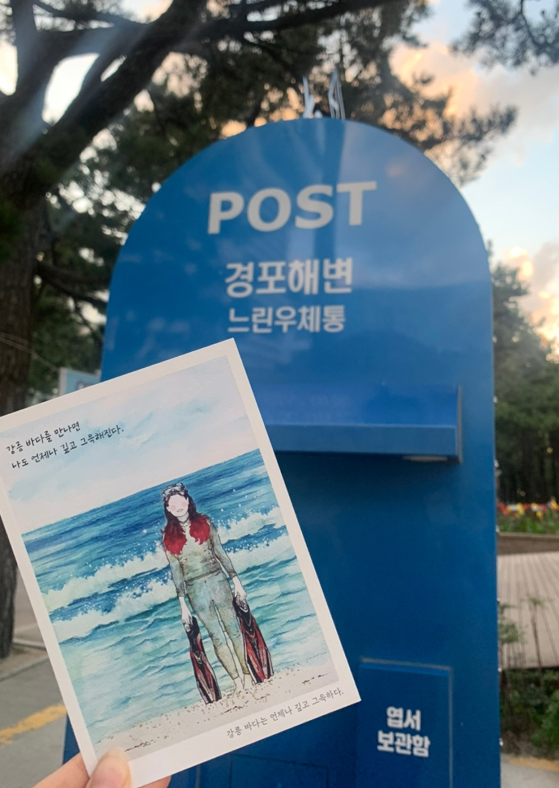

강릉

2022.08.21 ~ 22
가족여행으로 다녀온 강릉여행입니다.
강원도의 많은 곳을 가봤지만 강릉은 음식도 맛있고, 볼거리도 많아 기억에 많이 남는 여행장소입니다.
교통
<기차>
  천안아산역 -> 서울역 -> 강릉역
기차를 타고 이동 시 천안아산역에서 ktx를 탑승하여 서울역에서 하차한 뒤, 서울역에서 강릉역으로 가는 ktx로 갈아타서 이동 가능합니다.
기차에서의 이동시간은 총 2시간 41분 소요되며 ktx를 갈아타야 하기 때문에 시간이 더 소요될 수 있습니다.
기차표의 가격은 편도기준 총 41,700원입니다.
<시외버스>
아산역 -> 평택역 -> 평택시외버스터미널 -> 강릉시외버스터미널 -> 강릉역
고속버스를 타고 이동 시 버스터미널로 이동해야하기 때문에 1호선을 타고 평택역으로 이동한 후, 평택시외버스터미널에서 시외버스를 탑승하여 강릉시외버스터미널로 이동가능합니다.
강릉시외버스터미널에서 강릉역까지는 시내버스를 타고 이동하여야합니다.
시간은 총 3시간 32분 소요됩니다. 교통 상황과 버스, 지하철 시간이 따라 소요시간은 변동될 수 있습니다.
이동 가격은 지하철에서 1,800원, 시외버스 26,600원, 시내버스 1,530원을 지불하여 총 29,930원입니다.
<자동차>
천안아산역 -> 강릉역
자동차로 이동 시 평택제천고속도로로 이동한다는 전재로 통행료 9,900원을 지불해야하며 총거리는 266Km입니다.
소요시간은 3시간 23분이며 교통상황에 따라 변동될 수 있습니다.
택시로 이동 시 306,780원
숙소
벨라루나
펜션 정보
벨라루나 펜션은 강원도 강릉시 해안로621번길 11에 위치한 펜션으로 강릉의 사변진해변과 도보 1분 거리로 매우 가까운 펜션입니다. 1층부터 5층까지 총 10개의 객실이 있습니다. 전객실에 바다가 보이는 테라스가 있다는 장점을 가지고 있는 펜션입니다. 객실마다 침대의 수, 월풀 등 구조와 내부가 다르니 궁금한 부분은 링크를 확인해주세요.
제가 묵은 객실은 301호이며 쇼파도 있고, 창문과 테라스가 넓어 멋진 바다를 한 눈에 볼 수 있어 좋았습니다.
| 객실명 | 인원(기준/최대) | 비수기 | 성수기 |
|---|---|---|---|
| 101호 | 2/6명 | 169,000 | 270,000 |
| 102호 | 2/2명 | 160,000 | 250,000 |
| 201호 202호 | 2/3명 | 160,000 | 250,000 |
| 301호 | 4/6명 | 239,000 | 320,000 |
| 302호(월풀) | 2/3명 | 189,000 | 300,000 |
| 401호 402호 | 2/3명 | 159,000 | 250,000 |
| 403호 | 2/4명 | 169,000 | 250,000 |
| 501호 | 2/4명 | 179,000 | 300,000 |
* 기준인원 초과 시 1인당 20,000원
바베큐 정보
바베큐는 2인 기준 15,000원이며 1인 추가시 7,500원씩 추가됩니다.
개별 바베큐가 아닌 공동 바베큐장이며, 펜션 1층과 건물 옥상에서 이용 가능합니다.
숙소에 대해
펜션이 청결하고 관리가 잘 된 느낌을 받아 좋았습니다. 모든 방에 테라스가 있지만 각자 다른 느낌으로 꾸며져 있어 방을 고르는 재미도 있었고 큰 창으로 바로 앞 해변을 볼 수 있는 풍경도 만족스러웠습니다. 해변과 가깝고, 편의점도 바로 앞에 있어 편의시설을 이용하기 좋은 위치라고 생각되었습니다.
하지만 바베큐가 공동 바베큐장이라는 것과 엘레베이터가 없는 점이 아쉬웠습니다.
먹거리
엄지네 포장마차
강원 강릉시 경강로2255번길 21에 위치한 꼬막무침 식당입니다. 주말이나 밥 시간 때에 가면 기다리는 사람들이 많아 번호표를 뽑고 기다려야 하지만 음식을 주문하면 금방 나오기 때문에 회전율이 좋은 편이며, 포장도 가능합니다.
2층에는 번호표를 뽑은 사람들이 편하게 기다릴 수 있도록 의자와 tv를 둔 공간이 마련되어있었고, 도보 1분 거리에 무료 주차장이 있어 편하게 주차가 가능했습니다.
가격정보
꼬막무침비빔밥 : 35,000원
육사시미 : 30,000원
꼬막무침 : 33,000원
꼬막전 : 30,000
오징어순대 : 30,000
참소라 : 30,000
산낚지볶음 : 35,000원
쭈꾸미 : 35,000원
생갈치조림 : 40,000
영업정보
연중무휴
홀식사 11:00 ~ 22:00
포장 11:00 ~ 23:00
강릉항 회센터
강원 강릉시 창해로 14번길 55-21에 위치한 강릉항 회센터는 1층에서 횟감을 골라 포장하거나, 구매한 횟감을 2층 식당에서 차림비를 내고 조리해서 먹을 수 있습니다. 많은 좌석과 주차 공간으로 편한 식사가 가능하고 주변에 카페거리가 있기 때문에 밥 먹고 후식을 먹기도 좋은 위치에 있습니다.
가격정보
해산물의 가격은 계절에 따라 가격이나 주요 어종에 차이가 있습니다.
1인 세팅 비용 : 5,000원
매운탕 소/대 : 11,000/14,000
회덮밥/물회 : 6,000
생골뱅이무침 : 30,000
영업정보
매월 첫째 주, 셋째 줄 월요일 휴무
이용시간은 점포별로 다르지만 거의 모든 점포가 10:30 ~ 22:00까지 영업하며 라스트오더는 20:20 입니다.
관광지
경포해변
경포해변은 강원 강릉시 강문동 산1에 위치한 해수욕장입니다. 강릉시에 있는 동해안 최대의 해변으로 유명하며 강릉 시내에서 15분 정도면 도착 가능합니다.
해변 내부에 인명구조센터, 물품보관소, 탈의실 등의 시설이 잘 구비되어 있습니다.
해변 뒤쪽엔 작은 숲이 있어 자연 속에 있는 느낌을 주고, 사진을 찍기 좋은 포토존이나 1년 뒤 도착하는 느린우체통이 있어 꼭 해변에 들어가지 않더라도 볼거리가 많습니다.
가격정보
입장료 : 무료
주차 : 무료
샤워장 : 3,000원 (여름 해수욕장 기간에만 운영)
파라솔 대여 : 10,000
튜브, 구명조끼 대여 : 5,000
운영정보
매일 00:00 ~ 24:00 상시 이용 가능
해수욕장 개장 기간 : 07월 01일 ~ 08월 20일 (매년 변동있음)
호린파크
강원 강릉시 사천면 해안로 1119-51에 위치한 호린파크는 가을에 핑크뮬리축제를 진행하는 공원 및 캠핑장입니다.
공원 안에 카페가 있으며 공원 곳곳에 포토존과 전망대가 있어 시기를 잘 맞춰서 가면 예쁜 핑크뮬리와 함께 사진을 찍을 수 있는 장소입니다.
가격정보
입장료 : 5,000원
운영정보
핑크뮬리 축제기간 : 09.23 ~ 11.21 (2023년 기준, 매년 변동될 수 있습니다.)
관람시간 : 09:00 ~ 18:00